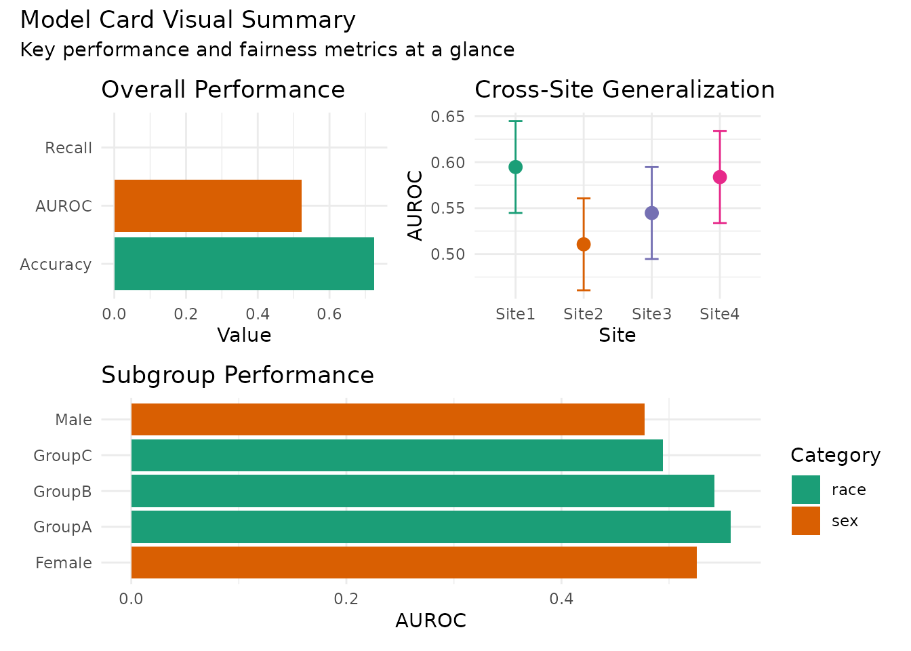

Model Cards: Transparent Documentation
model-cards.Rmd
library(langAssessR)
library(ggplot2)
library(dplyr)
#>
#> Attaching package: 'dplyr'
#> The following objects are masked from 'package:stats':
#>
#> filter, lag
#> The following objects are masked from 'package:base':
#>
#> intersect, setdiff, setequal, union
set.seed(404)Model Cards for Responsible Deployment
Model cards document a model’s intended use, performance characteristics, limitations, and ethical considerations. They’re essential for reproducibility and responsible deployment.
Building a Complete Model Card
- Train and evaluate a model comprehensively
# Generate data
sim <- simulate_lang_data(n = 400, n_sites = 4, seed = 505)
# Feature extraction
features <- la_features(sim$transcripts$narrative)
X <- features[,-1]
y <- sim$participants$y_bin
# Train model
model <- la_fit(X, y)
predictions <- la_predict(model, X)
# Comprehensive evaluation
eval_results <- la_eval(predictions, y)
print(eval_results$summary)
#> metric value
#> 1 AUROC 0.523
#> 2 Accuracy 0.725
#> 3 Precision NA
#> 4 Recall 0.000
#> 5 F1 NA
# Cross-context validation
cv_results <- cross_context_cv(X, y, sim$participants$site)
cat("\nSite-wise performance:\n")
#>
#> Site-wise performance:
print(cv_results$site_estimates)
#> site estimate lcl ucl
#> 1 Site1 0.5947005 0.5447005 0.6447005
#> 2 Site4 0.5837778 0.5337778 0.6337778
#> 3 Site3 0.5446796 0.4946796 0.5946796
#> 4 Site2 0.5106027 0.4606027 0.5606027
# Fairness audit
fairness_results <- audit_fairness(
predictions, y,
groups = data.frame(
sex = sim$participants$sex,
race = sim$participants$race
)
)
cat("\nFairness metrics:\n")
#>
#> Fairness metrics:
print(fairness_results$auc_by_group)
#> subgroup facet auc lcl ucl
#> 1 Male sex 0.4773810 NA NA
#> 2 Female sex 0.5259322 NA NA
#> 3 GroupA race 0.5574324 NA NA
#> 4 GroupB race 0.5425000 NA NA
#> 5 GroupC race 0.4943182 NA NA
# Contamination check (using mock mirror model for demo)
contamination_results <- check_contamination(
in_mirror = predictions,
in_nonmirror = predictions * 0.9, # Mock non-mirror
y_in = y,
ext_mirror = predictions,
ext_nonmirror = predictions * 0.9,
y_ext = sim$participants$y_ext
)
print(contamination_results)
#> metric in_mirror in_nonmirror delta_in external_mirror external_nonmirror
#> 1 R2 0.002 -0.002 0.004 -1.411 -1.75
#> delta_external risk_flag
#> 1 0.339 Medium- Create the model card
# Prepare model card metadata
model_card_path <- "demo_modelcard.yml"
export_modelcard(
model = model,
path = model_card_path,
meta = list(
model_name = "Language Assessment Demo Model",
version = "1.0.0",
date = format(Sys.Date(), "%Y-%m-%d"),
intended_use = list(
purpose = "Research demonstration of language-based assessment",
users = c("Researchers", "Clinicians (evaluation only)"),
out_of_scope = c("Clinical diagnosis", "Treatment decisions", "High-stakes screening")
),
data = list(
sources = c("Simulated transcripts (narrative)"),
sites = unique(sim$participants$site),
n_samples = nrow(sim$participants),
timeframe = "Synthetic data - no temporal range",
de_identification = "N/A - synthetic data",
demographics = list(
sex = table(sim$participants$sex),
race = table(sim$participants$race),
age_range = range(sim$participants$age)
)
),
method = list(
features = "Classic lexical features (char_len, word_count, TTR, mean_word_len)",
learner = "Generalized Linear Model (logistic)",
validation = c("5-fold cross-validation", "Leave-site-out validation"),
hyperparameters = "Default GLM settings",
random_seed = 404
)
),
performance = list(
overall = eval_results$summary,
cross_context = cv_results$site_estimates,
pooled_vs_lso = cv_results$compare
),
contamination = contamination_results,
fairness = list(
subgroup_auc = fairness_results$auc_by_group,
max_disparity = max(fairness_results$auc_by_group$auc, na.rm=TRUE) -
min(fairness_results$auc_by_group$auc, na.rm=TRUE),
calibration_available = nrow(fairness_results$calibration_bins) > 0
),
limitations = c(
"Synthetic data - not validated on real transcripts",
"Simple lexical features only",
"No external validation dataset",
"Limited to English text",
"No handling of missing data",
"Small sample size for robust estimates"
),
ethics = list(
deployment_warnings = c(
"Not validated for clinical use",
"Performance varies significantly by site",
"Potential bias across demographic groups",
"No safety testing for high-risk populations"
),
fairness_testing = "Audited for sex and race disparities",
privacy_protection = "Synthetic data only - no PII",
human_oversight = "Required for any deployment"
)
)
# Confirm card was created
cat("\nModel card saved to:", model_card_path)
#>
#> Model card saved to: demo_modelcard.yml- Read and display the model card
# Check if yaml package is available for pretty display
if(requireNamespace("yaml", quietly = TRUE)) {
card_content <- yaml::read_yaml(model_card_path)
cat("\n========== MODEL CARD PREVIEW ==========\n")
cat("Model:", card_content$model, "\n")
cat("Version:", card_content$version, "\n")
cat("Date:", card_content$date, "\n")
cat("\nIntended Use:\n")
cat(" Purpose:", card_content$intended_use$purpose, "\n")
cat(" Users:", paste(card_content$intended_use$users, collapse = ", "), "\n")
cat("\nKey Limitations:\n")
for(lim in card_content$limitations[1:3]) {
cat(" •", lim, "\n")
}
cat("\nEthical Considerations:\n")
for(warn in card_content$ethics$deployment_warnings[1:2]) {
cat(" ⚠", warn, "\n")
}
}
#>
#> ========== MODEL CARD PREVIEW ==========
#> Model: Language Assessment Demo Model
#> Version: 1.0.0
#> Date: 2025-09-07
#>
#> Intended Use:
#> Purpose: Research demonstration of language-based assessment
#> Users: Researchers, Clinicians (evaluation only)
#>
#> Key Limitations:
#> • Synthetic data - not validated on real transcripts
#> • Simple lexical features only
#> • No external validation dataset
#>
#> Ethical Considerations:
#> ⚠ Not validated for clinical use
#> ⚠ Performance varies significantly by site
# Clean up
if(file.exists(model_card_path)) file.remove(model_card_path)
#> [1] TRUE- Visualize key model card components
# Create a visual summary of model card elements
library(ggplot2)
library(patchwork)
# Performance summary plot
perf_plot <- eval_results$summary %>%
filter(!is.na(value)) %>%
ggplot(aes(x = metric, y = value, fill = metric)) +
geom_col() +
scale_fill_manual(values = pal_lang(5), guide = "none") +
coord_flip() +
labs(title = "Overall Performance", x = NULL, y = "Value") +
theme_minimal()
# Site variation plot
site_plot <- cv_results$site_estimates %>%
ggplot(aes(x = site, y = estimate, color = site)) +
geom_point(size = 3) +
geom_errorbar(aes(ymin = lcl, ymax = ucl), width = 0.2) +
scale_color_manual(values = pal_lang(4), guide = "none") +
labs(title = "Cross-Site Generalization", x = "Site", y = "AUROC") +
theme_minimal()
# Fairness summary plot
fairness_plot <- fairness_results$auc_by_group %>%
filter(!is.na(auc)) %>%
ggplot(aes(x = subgroup, y = auc, fill = facet)) +
geom_col() +
scale_fill_manual(values = pal_lang(2)) +
coord_flip() +
labs(title = "Subgroup Performance", x = NULL, y = "AUROC", fill = "Category") +
theme_minimal()
# Combine plots
combined_plot <- (perf_plot | site_plot) / fairness_plot +
plot_annotation(
title = "Model Card Visual Summary",
subtitle = "Key performance and fairness metrics at a glance"
)
print(combined_plot)
Model Card Best Practices
Completeness: Document all aspects, even if unfavorable
Versioning: Track changes across model iterations
Accessibility: Write for both technical and non-technical audiences
Regular Updates: Refresh when model or context changes
Distribution: Include with model artifacts and documentation
Using Model Cards in Practice
Before deployment: Review limitations and warnings
During deployment: Monitor against documented baselines
For users: Understand appropriate use cases
For auditors: Assess fitness for purpose
For researchers: Enable reproducibility
Conclusion
Model cards transform black-box models into transparent, auditable systems. They’re essential for responsible deployment of language-based assessments in healthcare and research settings.